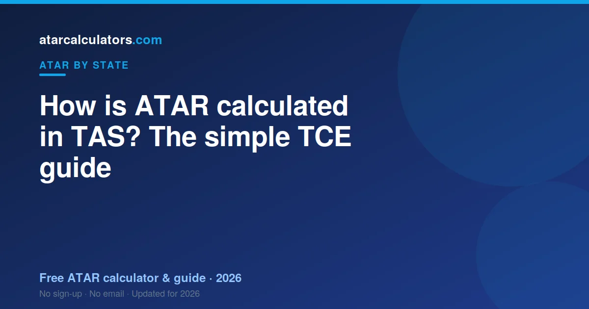

In Tasmania, your ATAR is built from your scaled TCE results. TASC takes your best five scaled scores and adds them into a Tertiary Entrance Score, or TES, out of a maximum of 75. TASC then ranks your TES against your age group and turns it into an ATAR between 0.00 and 99.95. TASC also publishes the table that links a TES to an ATAR. The University of Tasmania is where you apply.
Key takeaways
- Your ATAR is a rank from 0.00 to 99.95. It is not an average of your marks.
- It comes from your best five scaled TCE scores, added into a TES.
- The TES has a maximum of 75. A higher TES means a higher ATAR.
- TASC calculates your TES and ATAR, and publishes the conversion table.
- The University of Tasmania (UTAS) is where you apply for a place.
- Tasmania has no compulsory English subject rule for an ATAR.
- The same ATAR is used by universities across Australia.

An ATAR is a rank, not a mark
Your ATAR is a rank. It shows where you sit compared to other students your age in Tasmania. It is not the average of your marks.
Think of it as a line-up. Every student your age stands in a line, from lowest to highest. Your ATAR shows your spot in that line. An ATAR of 90.00 means you are near the top, ahead of about 90% of your age group.
The scale runs from 0.00 to 99.95, in steps of 0.05. The lowest number normally reported is 30.00. Anything under that shows as ‘less than 30’.
Because it is a rank, two students with the same marks can still land in different spots. Scaling and subject choice both play a part. You can try our TAS ATAR calculator to see an estimate for your own subjects.
What the TCE is and how you qualify
TCE stands for the Tasmanian Certificate of Education. It is the certificate you earn at the end of Year 12. TASC runs it.
To get your TCE, you need to meet a few standards. You must complete enough study at the right level. You also need to meet standards in reading, writing and maths.
The TCE and your ATAR are not the same thing. You can get your TCE without an ATAR. But to get an ATAR, you need to study enough pre-tertiary subjects that give scaled scores. Most students take five or more for this reason.
How your Tertiary Entrance Score is built
The number behind your ATAR is called the Tertiary Entrance Score, or TES. TASC builds it from your scaled scores.
Here is the process in plain steps. First, you sit your pre-tertiary subjects and get results. Next, TASC scales each result (more on that below). Then TASC takes your best five scaled scores. Finally, it adds those five together. That total is your TES.
- Each subject provides a scaled score of up to 15.
- Your best five scaled scores are added together.
- So the TES has a maximum of 75 (five subjects at 15 each).
A higher TES means a higher ATAR. TASC publishes a table each year that links a TES to an ATAR. You do not need to memorise the table. You just need to know that more scaled points move you up the rank.
A simple worked example
Let us walk through a made-up student. Call her Ruby. Ruby sits six pre-tertiary subjects.
After scaling, her six scores are 14, 13, 12, 11, 10 and 8. TASC drops her lowest score, the 8. It keeps her best five: 14, 13, 12, 11 and 10.
TASC adds those five together. That gives a TES of 60. TASC then checks its published table for the year and finds the matching ATAR.
Notice two things. Her weakest subject did not count, because only her best five are used. And each of her top five still mattered, because they were all added in. This is why steady results across several subjects help so much.
How TCE scaling works
Scaling keeps things fair between subjects. A score of 12 in one subject is not always as hard to earn as 12 in another. Scaling adjusts for that.
TASC scales each subject by looking at the whole group who took it. If a subject is full of high-achieving students, it tends to scale up. If a subject has a weaker overall group, it can scale down.
This is about the group, not you alone. You do not get scaled up just for picking a ‘hard’ subject. You get a fair score based on how your subject group performed across all their subjects.
So chasing an ‘easy’ subject can backfire. The smarter move is to do well in subjects you are strong in. See our guide to the best scaling subjects in TAS for how this plays out.
Tasmania has no compulsory English rule
Some states make you pass an English subject to get an ATAR. Tasmania does not have that rule.
This gives you more freedom in your subject choice. Still, strong English skills help across many subjects, and you do need to meet the TCE literacy standard.
So while English is not forced, it is still worth taking seriously. Good reading and writing help your marks in most subjects.
Courses and prerequisites you need
Your ATAR gets you considered for university. But many courses also ask for specific subjects, called prerequisites.
For example, an engineering degree often needs a maths subject, and sometimes physics. A health science degree may need a science. If you skip a prerequisite, a high ATAR may still not be enough for that course.
So plan backwards from the course you want. Check its prerequisites now, while you can still choose subjects. In Tasmania, the University of Tasmania lists prerequisites on its course pages.
Who does what: TASC, UTAS and your school
It helps to know who does what in Tasmania. Two bodies matter most, and they do different jobs.
TASC runs the TCE. It sets the subjects, oversees assessment, and reports your results. TASC also scales your scores, builds your TES, works out your ATAR, and publishes the conversion table.
The University of Tasmania, or UTAS, is where you apply for a place. So TASC gives you your rank, and UTAS handles your application. For a full breakdown, see our guide to TASC and UTAS.
Bonus points and early entry
Your ATAR is not always the final number a university uses. The University of Tasmania offers schemes that can help beyond your raw ATAR.
These include adjustment factors and early or guaranteed entry programs for eligible students. So a course can be within reach even if your ATAR is a little below its usual level.
It is worth checking what you qualify for early. Our selection rank calculator shows how adjustment points can change your position.
Is a TAS ATAR used interstate?
Yes. The ATAR is one national rank. A Tasmanian ATAR is read the same way as an ATAR from any other state.
This means you can use your TAS ATAR to apply for courses in other states. Students from other states can also use their ATAR to apply in Tasmania. The rank travels with you.
Estimate your TAS ATAR
The best way to understand all this is to try it with your own numbers. Our free TAS ATAR calculator lets you enter your scores. It then shows an estimated ATAR using the same best-five structure.
No estimate can be exact before results day. Scaling depends on the whole group, and that is only known after exams. So treat any estimate as a guide, not a promise.
Still, an early estimate is useful. It shows you if you are on track for your goal. If there is a gap, you have time to act on it.
Level 3 and 4 pre-tertiary subjects
Not every subject counts towards your ATAR in Tasmania. Only pre-tertiary subjects, at Level 3 and Level 4, are designed to feed into university entrance. These are the more academically demanding courses, and it is your results in them that build your ATAR.
So when planning for a strong ATAR, make sure you are taking enough Level 3 and 4 pre-tertiary subjects. Lower-level subjects have their place in the TCE, but they do not contribute to your ATAR in the same way, so your pre-tertiary choices are the ones that matter for university entrance.
Studying Years 11 and 12 in Tasmania
In Tasmania, many students complete their senior secondary years at a dedicated college rather than a combined high school. Wherever you study, what matters for your ATAR is the pre-tertiary subjects you take and how you rank in them.
Your school or college sets and marks your internal assessment, and TASC oversees the standards and the external assessment. So the setting varies, but the pathway to an ATAR, strong pre-tertiary results, ranked and scaled, is the same for every Tasmanian student.
How much scaling moves a score
Scaling can lift a strong score in a high-scaling subject by several points, while the effect is smaller in the middle of the range. So the benefit is greatest for students who rank near the top of a strong-scaling subject.
For a middling result, the scaling lift is more modest. The headline scaling of a subject describes what happens across the whole cohort, and you only capture the top of that benefit by ranking near the top. Performance still matters more than the subject’s reputation.
A simple way to check your ATAR
Rather than work through the scaling by hand, you can let a calculator do it. Enter your pre-tertiary subject scores and it applies scaling and combines your best five into an estimated ATAR, so you can see where you stand.
This is far quicker than tracking the mechanics yourself, and it lets you test how lifting a subject would change your result. It turns the calculation into something you can actually use for planning.
Common questions
How many subjects do you need for a TAS ATAR?
Your ATAR uses your best five scaled scores. So you need at least five pre-tertiary subjects that provide scaled scores. Many students take six, which gives a safety margin if one subject goes poorly.
Who calculates the TAS ATAR?
TASC calculates the TAS ATAR. It scales your TCE scores, adds your best five into a TES, works out your ATAR, and publishes the conversion table. The University of Tasmania is where you apply for a place.
What is a TES in Tasmania?
TES stands for Tertiary Entrance Score. It is the sum of your best five scaled scores, out of a maximum of 75. Your ATAR comes from your TES using a table TASC publishes each year.
Does UTAS calculate the ATAR?
No. TASC calculates the ATAR and publishes the conversion table. The University of Tasmania (UTAS) is the university you apply to. It is easy to mix them up, so it helps to keep the two roles separate.
Do I need English for a TAS ATAR?
There is no compulsory English subject rule for a Tasmanian ATAR. You do need to meet the TCE literacy standard, and strong English still helps your marks across subjects.
What is the highest TAS ATAR?
The highest ATAR is 99.95, which matches the top of the rank. ATARs run down to 30.00, and results below that are reported as 'less than 30'.
Is a TAS ATAR treated the same interstate?
Yes. The ATAR is a national rank, so a Tasmanian ATAR is read the same way in every state. You can use it to apply for courses anywhere in Australia.
Can I estimate my ATAR before results?
Yes. A calculator can give you an estimate from your expected scores. It cannot be exact, because scaling depends on the whole cohort, but it is a useful guide for planning.